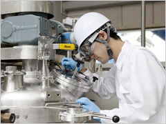
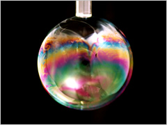

研究開發
獅王的事業版圖以家用的日用品為主，此外也擴及藥品、化學用品等各種事業，研究範圍很廣泛，包括化學、生物以及各領域的專業人材。此外，各研究部門與亞洲的關係企業，與國內、海外的研究機構互相合作，促進合作研究。
研究系統
合作開發活動
在日本獅王本社，產品開發部門，按照產品種類，成立不同的研究單位，並與商品企劃部門密切配合，進行開發產品的工作。應用研究部門，針對素材或材料應用於產品的技術，進行開發研究。運用界面科學和生命科學，使產品相關的新技術萌芽。支援研究部門，則是針對與獅王的研究開發共通領域相關的科技研究，支援產品開發研究和應用研究。
獅王的事業版圖以家用的日用品為主，此外也擴及藥品、化學用品等各種事業，研究範圍很廣泛，包括化學、生物以及各領域的專業人材。此外，各研究部門與亞洲的關係企業，與國內、海外的研究機構互相合作，促進合作研究。
技術開發
生產技術研究
開發出的新原料和新產品，必須進行製造量產。生產技術研究中心將開發研究與實際生產結合起來，進行製程技術研究。追求以最節省原料和最有效率的方式，製造出高品質的產品。因此必須不斷提昇、進步，導入最先進的化學工業、材料科學、界面科學等等知識和技術。近年來面對重要的「環境保護」議題，開發製造界面活性劑的新製程。例如來自植物的高純度甲基酯製造出陰離子界面活性劑MES(脂肪酸甲酯磺酸鹽)，以及和新型的非離子界面活性劑「MEE(乙氧基化脂肪酸甲酯)」等等，洗淨力和分解力都比較強，為了今後能擴大生產，因此進行更有效率的製程研究。
以新技術開發出適合環境的陰離子界面活性劑製造技術
獅王使用棕櫚油為原料，開發出陰離子活性界面劑MES（脂肪酸甲酯磺酸鹽Methyl Ester Sulfonate），做為衣服洗潔劑的主成分。MES來自植物，不但是能夠進行碳中和的界面活性劑，而且具備下列特色：洗淨力強、耐硬水性和生物分解性高，屬於環保的多功能界面活性劑，所以受到全世界的關注。
MES在反應時容易變色，因此難以低本而有效率生產。但獅王企業先行開發漂白技術，在1991年取得成果，在全球最早量產製造成功。接下來的目標，就是將MES全球標準化，提升品質，並且致力於開發較先前更簡便安全的製造方法。尤其為了改善MES常見的變色和加水分解性，抑制副反應等，結合界面科學和化學工業知識加以檢討研究，開發了獨步世界的MES製造技術。為向世界各地供給MES，在馬來西亞設立了新工廠，在這裡使用最新的MES製造技術
界面科學技術
兩個性質不一樣的「東西」在一起就會產生「界面」，與這個界面習習相關的就是界面科學。獅王進行界面科學研究超過120年，不斷提供走在時代前端的清潔劑。近年來，為環保而開發出以棕櫊等植物為原料的界面活性劑，能兼顧洗淨力和生物分解性，因此受到世界的關注。此外，為了研究空氣與液體的界面現象產生的「泡沫」，以及油四對水的界面現象產生的「乳化」等構造，導入世界最尖端的科技，挑戰開發超越界面活性劑的未來洗淨技術，每天朝向研究目標邁進。
口腔科學技術
「飲食」「說話」「微笑」。在快樂豐富的生活中，嘴巴扮演了很重要的角色。為了提昇人們生活的品質，獅王累積了100年以上的口腔科學成果，並持續發展，研究以非侵入性的手法診斷蛀牙，從分子細胞學控制牙齦炎的症狀、使用自行開發的牙斑菌樣本來研究抑制細菌的方法。此外近年來也和企業之外的研究機構合作，持續研究以明瞭口腔環境對整體建康的影響。我們努力的方向，是以口腔科學為中心，融合企業內廣泛的技術，為口腔用品甚至食品、醫療用品等創造出新價值。
初期蛀牙的診斷技術研發
影響生活最深刻的口腔疾病之一是蛀牙。在我們的經驗裡，所謂的「蛀牙」是在牙齒被蛀出牙洞而感到疼痛的時期。最近的研究結果顯示，牙齒蛀出牙洞前，也就是在初期階段就發現蛀牙，加以照顧的話，就不容易變成嚴重的蛀牙。於是非侵入性，不必鑽開牙齒的治療方法，受到世界各國廣泛採用。獅王企業在一開始就著眼於這樣的趨勢，1990年代開始研發初期蛀牙的診斷技術。其中一個例子，就是開發QLFTM系統。早期的蛀牙，在外觀上是健全的牙齒，因此不容易被發現，所以要進行客觀定量性的診斷。以藍色的可見光照射牙齒時，齒的內部會發出螢光色，但結晶構造較粗糙的初期註牙部分，會將螢光擴散反射，因此比起健康的牙齒，螢光較暗。QLFTM系統，就利用這樣的現象，將這樣的現象可視化，加以正確的定量。圖一是人造的初期蛀牙使用含氟牙齒研磨劑14天後的變化。初期蛀牙的可視化，不但能夠早期發現，而且能夠透過再石灰化作用使它恢復建全，就是透過這套系統才能簡便將此現象加以定量化證明的。
另一方面，為了知道牙齒內部複雜的構造，通常都要拍下牙齒剖面的X光片，但獅王開發了非侵入性的微焦點斷層掃描系統(Micro CT、顯微CT)技術。例如臼齒是最容易蛀牙的部位，為了建立預防技術，就必須詳細解析各階段臼齒的解剖構造。圖二是在使用含氟牙齒研磨劑以前和之後，臼齒在顯微CT系統上的立體影像。善用本技術，就能確認臼齒窩溝深處的初期蛀牙部分，用含氟牙齒研磨劑加以處理，經過再礦化改善的情形。導入最先進的蛀牙診斷技術，應用在產品開發上面，就能夠製造出功能更好的新防蛀牙膏。
產品開發
為了讓人們擁抱清潔衛生的日常生活，我們開發出各種食衣住的相關產品。具體而言，用植物性的棕櫚、椰子為原料製造出各種生物分解性高的界面活性劑；研究各種容易對分解污垢的酵素，應用在洗衣清潔劑上面；運用奈米科技做出超微立柔軟精；研發硬面洗淨技術開發出廚房用、客廳房間用的清潔劑；研究害蟲生態製造殺蟲劑等等。此外，更因應生活型態的變化，剖析研究各種衣服和住家髒污的狀況；與研究黴菌和細菌的機構合作，探索更有效率的洗淨和除菌技術。
保健產品
人們若是常保口腔、身體的清潔與健康，就會看起來更年輕美貌。因此我們致力於開發滋潤人心、提昇生活品質的商品。具體舉例，比如說像功能和使用感更好的牙膏或潄口水、基於人體工學設計的牙刷、洗淨力和皮膚保溼兼顧的沐浴乳、增進頭皮滋潤和毛髮柔順感的洗髮精和潤絲精、抑制汗臭的止汗劑等。此外，為明確了解產品對人體的作用，會進行臨床實驗，對產品的功能、品質確立更科學、客觀的證明，盡心盡力開發真正讓人們覺得有用的產品。
牙周病護理用的超極細毛牙刷
想要每天刷牙就能除去牙齒和牙齦間袋狀齒槽溝的牙斑菌嗎？就用獅王的細絲特磨超極細毛牙刷吧。刷毛前端用的是超極細毛，前端非常細，比起傳統的產品更能有效深入牙齒和牙齦間的袋狀齒槽溝，去除牙斑菌。用有限要素法※解析不同刷毛形狀對於牙齦的壓力時，可以看到超極細毛對牙齦的壓力最小，刷牙時能夠將疼痛抑制在最小的程度。
支援研究
香氛、香味
香氛或香味，不但能讓顧客享受舒適生活，也是能提高商品銷售量的要素。運用調香技術、評估技術、感性工業的專業，創造香氛或香味來支持產品的開發。調香技術是要記住數千種以上香料成分的香味，而且累積創造新香味的訓練，憑著這樣的經驗，組合香料成分，是一種高度專業的技術。近年還發展出測量腦部功能和自律神經變化的方法，因此能對使用者來測試各種產品的香味的「感覺」，進行評估和分析，更客觀開發出「令人由衷舒服的香味」，將香味的生理和心理作用的研究連繫起來。這樣的技術，不只用在香味上，也將精密的分析技術應用在惡臭分析上面，對於室內曬衣的異味或體臭、口臭等，對於顧客面對生活中在意的味道的解決對策，加以積極研究。
包裝
包裝、容器，不但是「商品的臉」，向顧客傳達商品的魅力，也是在生活一景中用起來方便的「道具」，顧客使用完畢後更是回收的「資源」，具備各種不同方面的特質。所以包裝容器開發者必須兼顧設計者、研究者、工程師和日常生活使用者等種種不同的角色。世界共通容易使用的設計，節省資源便於回收的環保設計，以及在生活中使用能夠感到快樂感受的設計，能以適當的價格提供給顧客的設計，這些都是我們追求的目標。為了達成這樣的目標，我們進行日常生活調查，對包裝材料進盼科學研究，用3D-CAD（模型）設計容器的形，並且運用電腦模擬(CAE)進行設計評估、實體模型和實際使用的包裝材料評估，以及外觀評估等，做為主要的範疇，進行研究活動。
有限要素法
有限要素法Finite Element Method(FEM)解析，是分析對物體施力的時候，著力點在哪裡，以及計算如何變形的模擬方式。將解析對象用定義為四面體等單純形狀的集合體，用單位形狀產生的變化來計算，相對於前全體現象求最近似解。在獅王企業，通常用在容器設計，計算掉落時受到衝擊和壓縮的程度，對於減少塑膠用量具有很大的貢獻。
分析
分析技術研究，是為了正確解讀分析資料，必須具備許多跨域領知識，以及專家的深刻洞察力。無論是家庭用品、藥品、化學製品，在開發獅王企業的所有產品時，「分析」都是不可或缺的。例如，商品開發的初期階段，做為清除目標的「髒污」的本質為何、產品的基礎材料的作用結構等，都必須以科學的合理性來驗證，並且支援開發研究活動。另外一方面，在製造過程中發生的問題，以及顧客對於品質的疑問，都必須探究發生的原因，所以分析化學和微生物學資料的蒐集是重要的任務。此外，為以專業的立場支援產品開發專業，專門人員的養成也是努力重點之一。
環境與安全
立基於科學根據的安全評估，讓顧客安心，是對企業來說相當重要的責任。獅王在產品或原料方面，都特別關注對「人」和「環境」的影響，因此運用分子生物學或生理學等生物科技技術，進行各種安全評估實驗。不僅是用現有的技術進行評估，而且進一步開發評估技術，例如研究動物實驗的替代方案等。
安全性的評估與確認，是全世界應該共同面對的課題。我們致力以全球化的視野，進行國內外安全資料的蒐集和分析，並且運用在實際的評估上。同時企業也積極參加、協調業界公會活動，以促進相關問題的解決。